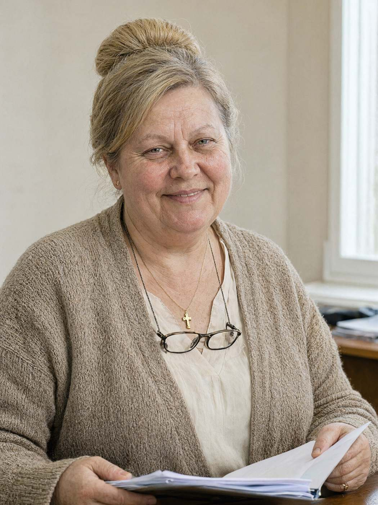

Місто: Івано-Франківськ
Дата: 17.10.2026
Час початку: 11:30 Час закінчення: 12:20
Місце: бухгалтерія ТОВ «Чорне зерно», вул. Пасічна, 77, 2-й поверх
Відібрав: майор поліції Волков Д.С., старший слідчий в ОВС СУ ГУНП в Івано-Франківській області
Особа: Дмитрук Ольга Степанівна, 56 р., головний бухгалтер ТОВ «Чорне зерно» (з 2012 р.), проживає: вул. Хоткевича, 18, тел. +380 96 704 18 62.
Особі роз'яснено право не свідчити щодо себе та близьких родичів (ст. 63 Конституції України). Пояснення надає добровільно.
Прим. слідчого: до початку пояснення особа поставила перед слідчим чай і тарілку з пирогом з яблуками («їжте, Дмитре Сергійовичу, ви ж, певно, зі вчора нічого не їли»). Слідчий з'їв шматок пирога. Пиріг на якість пояснень не вплинув, але був добрий. На стіні в бухгалтерії — ікона, календар «Чорного зерна» і дитячий малюнок з підписом «Мамі Олі».
Питання: Коли ви востаннє говорили з Палійчуком В.І.?
Відповідь: У четвер, п'ятнадцятого, ввечері. О 21:05 Василь Іванович дзвонив — просив на восьму договори з постачальниками. Сердився, що Мар'яна пішла, — вони того вечора посварились на обсмажувальні, вона звільнилась, а в нас партія на Яремче. Він хотів зранку все перевірити, щоб нікого не підвести. Він такий був: як щось горить — то зразу все й усім.
Питання: Що ще він казав у тій розмові?
Відповідь: Більше нічого не казав. Дві хвилини, може. «Олю, на восьму — договори». Я сказала: «Добре, Василю Івановичу, будуть». Отак і все. Якби я знала, що то востаннє… (витирає очі хусточкою)
Питання: 12.10 він забрав у вас список пакувальників із БФ «Родина» з копіями паспортів. Для чого?
Відповідь: Не пояснив. Прийшов, попросив, я дала. Він директор, я не питаю. Думала — для перевірки якоїсь, для податкової, у нас бувало.
Питання: Що вам відомо про БФ «Родина»?
Відповідь: Божі люди. Мого Богдана з того світу витягли. (пауза) Ви, певно, вже знаєте, у вас же бази. Син у мене хворів. На то саме, на що й ті хлопці. Я його два роки по лікарнях возила, по бабках, по монастирях — нічого. А пастор Ярослав його взяв — і вернув мені живого. Тепер він там «старший брат», допомагає іншим. За таке, Дмитре Сергійовичу, ноги цілують.
Питання: «Чорне зерно» щомісяця перераховувало фонду кошти. На яких підставах?
Відповідь: Благодійність. Рішення директора. Договір про соціальну адаптацію від 2023 року, Василь Іванович підписував. Я — бухгалтер, я проводжу те, що мені дають. Усе офіційно, по рахунку, з призначенням платежу. Податкова перевіряла — питань не було.
Питання: Де ви були ввечері 15.10 після дзвінка Палійчука?
Відповідь: Вдома. Помолилась, спати лягла о десятій. Я рано лягаю, я ж о шостій уже на ногах, — тісто саме себе не замісить.
Питання: Що ви можете сказати про Палійчук Інну Олегівну?
Відповідь: Бідна. Вона ж у Буковелі… з подругою. (пауза) Ну, так вона сказала в офісі. Подруга в неї, видно, спортивна дуже, бо Інночка звідти з такими фото вертається. Я не осуджую, Боже борони. Кожен сам перед Богом відповідає. Василь Іванович заслуговував кращого. Але то не моє діло. Пийте чай, вистигне.
Питання: Хто, на вашу думку, міг бажати Палійчуку зла?
Відповідь: Не знаю. Він людей не кривдив. Хіба Мар'яна кричала на нього того вечора — то вся обсмажувальня чула. Але Мар'яна — дитина гаряча, вона б мухи не вбила. Я за всіх молюсь.
З моїх слів записано вірно, мною прочитано. Зауважень немає. «Пирога можна взяти додому».